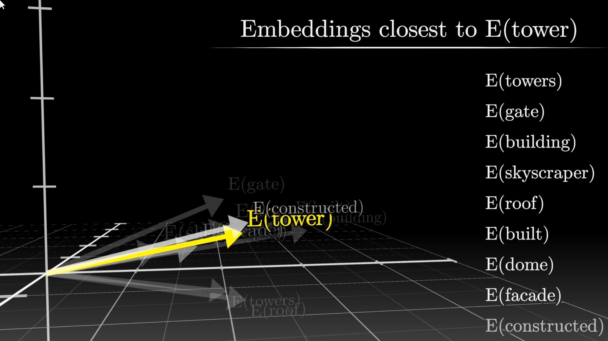
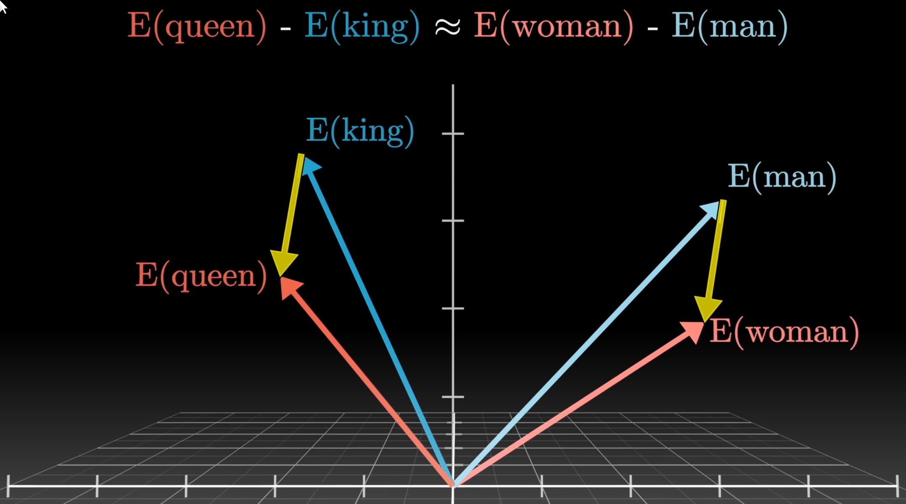
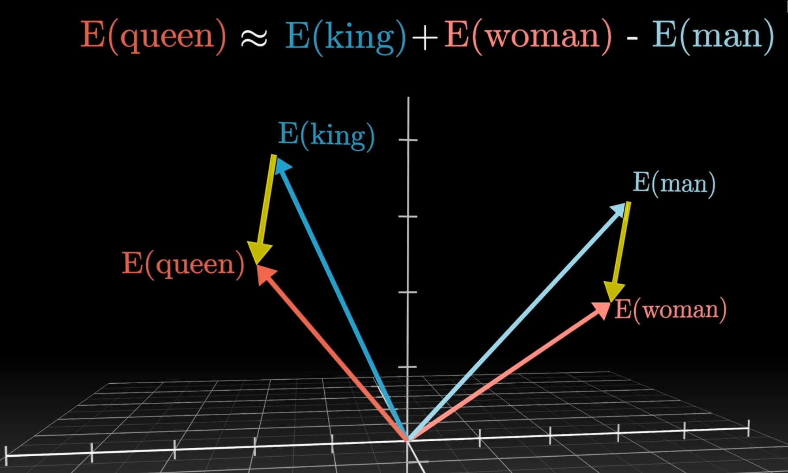
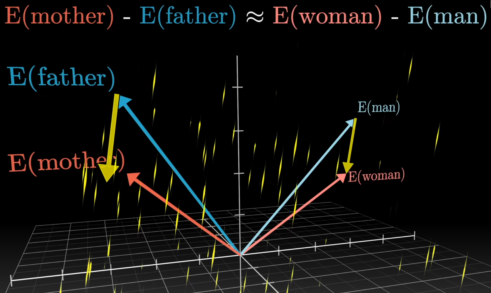
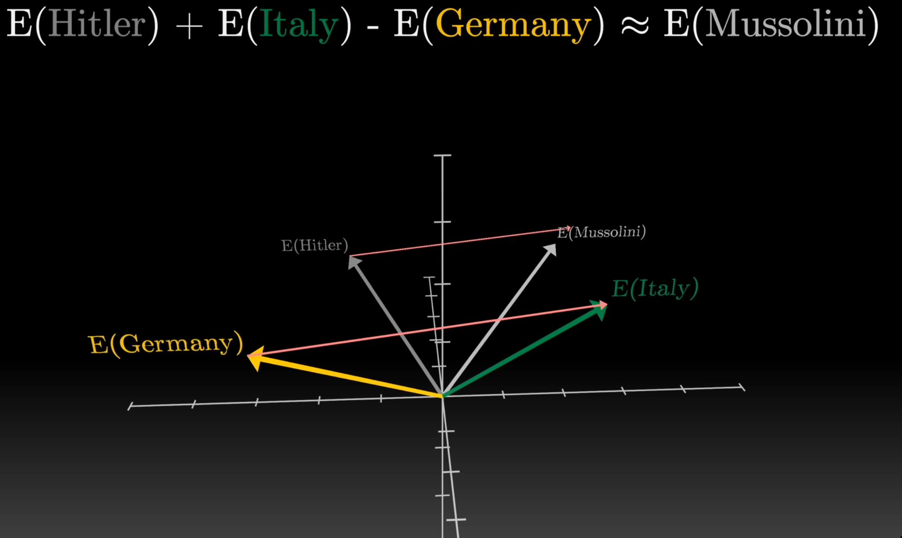
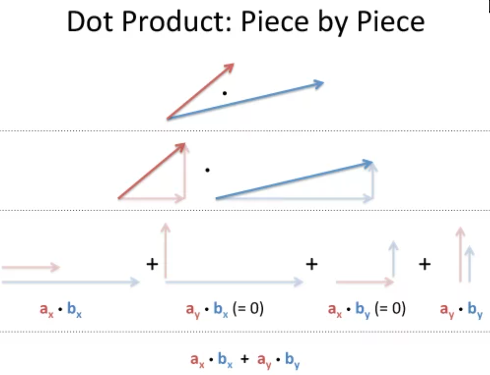
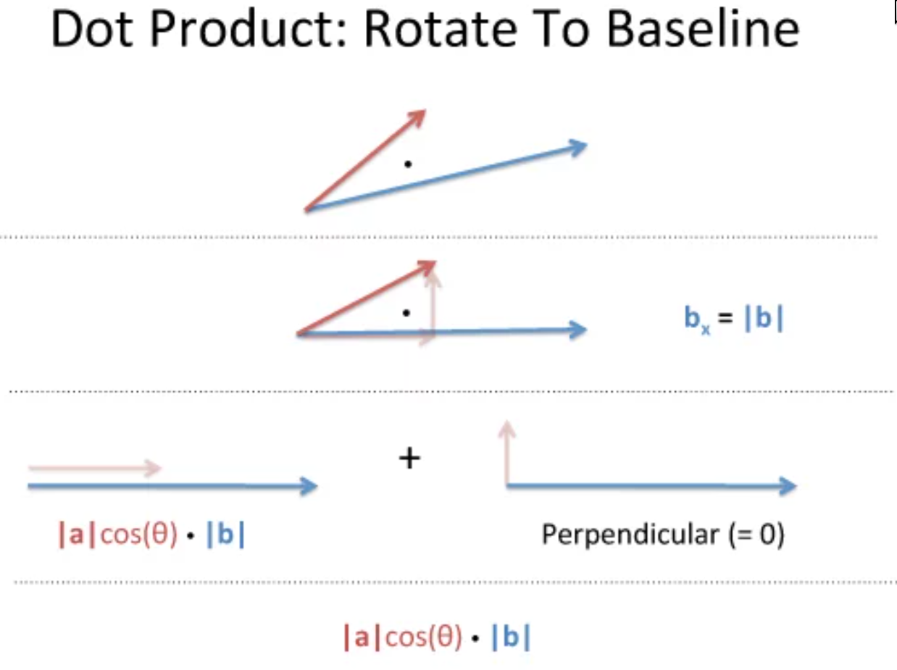

Video: https://www.youtube.com/watch?v=wjZofJX0v4M&list=PLZHQObOWTQDNU6R1_67000Dx_ZCJB-3pi&index=6
What are tokens for different modalities?
- Text: broken up words
- Image: broken up patches
- Audio: broken up time slices
Each token is represented as a vector of numbers (embeddings) that are learned during training.
What is an embedding matrix?
- A matrix that maps tokens to embeddings.
- For each token, the matrix gives a vector of numbers that represent the token.
- Embedding matrix is learned during training.
What do the embeddings represent?
- Embedding size: 12,288 ⟹ 12,288-dimensional space
- Each dim represents an idea
- Linear combinations of these dims represent ideas as well
- Each entry in an embedding tells us what magnitude of the idea present in the dim is relevant to represent the token that the embedding represents
- The embeddings represent the token in a high-dimensional space.
- Also position in the sequence (context)
- Each embedded can be represented as a vector (or a point in space).
- Similar tokens are close to each other in this space.

How can the embeddings of the tokens for "man" and "woman" be used to find the embedding for "queen" given the embedding for "king"?


What does the difference between two embeddings represent?
The difference between two embeddings represents the quantiative direction it takes to get to that other idea
In the below image:
- E(mother) - E(father) = E(man) - E(woman)
- So roughly the vector of female is a_{p} approximated by ≈ E(mother) - E(father)
- or ≈ E(man) - E(woman)

Similarily in the below example:
- E(Hitler) - E(Mossolini) ≈ E(Italy) - E(Germany)
- ⟹ that is the direction vector of italiness

Can also invent a vector direction:
- For example, what is the German analog of sushi?
- E(Germany) - E(Japan) gives direction vector of "Germanness" from "Japaneseness"
- E(Sushi) gives us position in space of japanese food
- Now we want to translate from sushi of "Japaneseness" to food that is "German"
- ⟹ E(Germany) - E(Japan) + E(Sushi) ≈ E(Bratwurst)
Why can we use dot products to measure similarity between embeddings?
- Dot produt of two vectors that are orthogonal is 0
- Dot product of two normalized vectors that are parallel is 1


How can we find out how plural a word is?
- Get the singular word's token's embedding E(cat)
- Get the plural word's token's embedding E(cats)
- For word octopus: e(cats) - e(cat) + E(octopus) ≈ E(octopi)
Interesting case:
plural_embedding = e(cats) - e(cat)
E(two) ≈ plural_embedding + E(one)
E(three) ≈ plural_embedding + E(two)
E(four) ≈ plural_embedding + E(three)
What is the output of the transformer?
- Probability distribution of all tokens
- Obtained from taking multiplying the embedding with the unembedding matrix WU and applying softmax
How to convert a sequence of numbers into a discrete probability distribution?
Use softmax which:
- Input: logits
- Output: probabilities
- Squashes the numbers to be between 0 and 1
- Sums to 1
- Largest number dominates the distribution
Softmax equation: Pi=∑jexjexi
What is softmax with temperature?
- Temperature is a hyperparameter that controls the entropy of the distribution
- Tempoerature = 0: all probability mass goes to the largest number
- Temperature < 1: more peaky distribution
- By making the magnitude of values larger
- Temperature = 1: normal softmax
- Temperature > 1: more uniform distribution
- By making the magnitude of values smaller
Equation: Pi=∑jexj/Texi/T